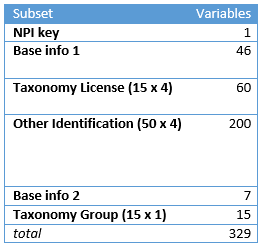
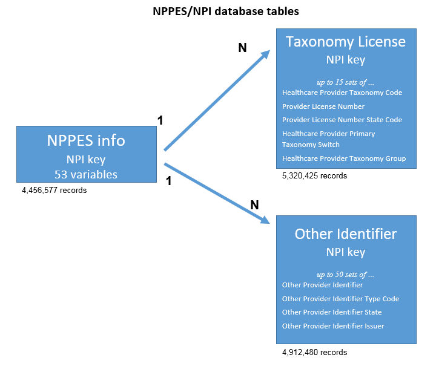

Earl F. Glynn, UMKC Center for Health Insights, 2015-02-04
NPPES / NPI File
The Centers for Medicare and
Medicaid Services provide a huge file of healthcare
providers called by either of these names:
- National
Plan and Provider Enumeration System (NPPES)
downloadable file, or
- National
Provider Identifier (NPI) downloadable file.
An updated Full
Replacment Monthly NPI file is available near the
middle of each month.
The full file from Dec. 2014 was a 484 MB ZIP that became a huge 5.03 GB file when decompressed.
Flat and Bloated NPI File
The complete file had 4,456,577 records each with 329
variables. This full file has a very simple structure,
which is shown below:
Chart 1. Structure of Raw NPI File
The file is extremely bloated -- 2.9 billion of the 5.4
billion characters in the file are double quotes (") used to
surround many empty fields in the CSV file in repeating
groups that are empty. The file contains nearly 1.5
billion commas to separate the many empty fields.
To simplify and speed up processing, two repeating groups
of variables were extracted from the raw data file. A
separate table was created for Taxonomy License/Group
information, and another table was created for the Other
Identification information. With this approach records
were not needed and did not exist instead of populating
millions of fields with empty strings. A database "join" can
be used to connect the records when needed.
Relational Database Tables
R scripts to download, cleanup and divide the original file
into three separate files can be found at the GitHub
repository along with some information about how to
use them.
These three new files can be loaded into three relational tables shown below:
Chart 2. New NPPES/NPI database tables

The contents of the Taxonomy License and Other Identifier files are shown in the diagram above.
Here is the content of the NPPES info file:
| NPI key |
| Entity Type Code Replacement NPI Employer Identification Number (EIN) Provider Organization Name (Legal Business Name) Provider Last Name (Legal Name) Provider First Name Provider Middle Name Provider Name Prefix Text Provider Name Suffix Text Provider Credential Text Provider Other Organization Name Provider Other Organization Name Type Code Provider Other Last Name Provider Other First Name Provider Other Middle Name Provider Other Name Prefix Text Provider Other Name Suffix Text Provider Other Credential Text Provider Other Last Name Type Code Provider First Line Business Mailing Address Provider Second Line Business Mailing Address Provider Business Mailing Address City Name Provider Business Mailing Address State Name Provider Business Mailing Address Postal Code Provider Business Mailing Address Country Code (If outside U.S.) Provider Business Mailing Address Telephone Number Provider Business Mailing Address Fax Number Provider First Line Business Practice Location Address Provider Second Line Business Practice Location Address Provider Business Practice Location Address City Name Provider Business Practice Location Address State Name Provider Business Practice Location Address Postal Code Provider Business Practice Location Address Country Code (If outside U.S.) Provider Business Practice Location Address Telephone Number Provider Business Practice Location Address Fax Number Provider Enumeration Date Last Update Date NPI Deactivation Reason Code NPI Deactivation Date NPI Reactivation Date Provider Gender Code Authorized Official Last Name Authorized Official First Name Authorized Official Middle Name Authorized Official Title or Position Authorized Official Telephone Number Is Sole Proprietor Is Organization Subpart Parent Organization LBN Parent Organization TIN Authorized Official Name Prefix Text Authorized Official Name Suffix Text Authorized Official Credential Text |
Taxonomy License Sets
The original file provided 15 sets of Taxonomy License
information whether needed or not.
The new file has over 5 million records, but with a
variable number of records per provider. Here is a
table of the number of Taxonomy License records that exist
by provider:
Table 1. Counts of Providers with Given Number of
Taxonomy License Records
1 2 3 4 5 6 7 8 9 10
4383720 616710 173439 57432 28708 17906 11842 8257 6016 4550
11 12 13 14 15
3535 2847 2250 1836 1377
Only 1377 of the 4.4 million providers have information for
all possible 15 Taxonomy License sets. Mostly
providers (4.4 million) only needed a single record.
Other Identifier
The original file provided 50 sets of Other Identifier
information whether needed or not.
The new file has nearly 5 million records, but with a
variable number of records per provider.
Table 2. Counts of Providers with Given Number of Other Identifier Records
1 2 3 4 5 6 7 8 9 10
1776975 1153615 752257 403529 250812 156081 105916 76037 56142 42105
11 12 13 14 15 16 17 18 19 20
31820 24074 18604 14467 11387 8958 7145 5651 4416 3224
21 22 23 24 25 26 27 28 29 30
1604 1204 966 784 621 497 417 358 316 285
31 32 33 34 35 36 37 38 39 40
248 222 201 179 160 146 135 125 111 102
41 42 43 44 45 46 47 48 49 50
92 83 75 66 63 56 49 40 34 26
Only 26 of the 4.4 million providers have information for
all possible Other Identifier sets. About two-thirds
of the providers have only one or two Other Identifier
records.
Missouri Providers
The 4-Missouri-Connections.R script extracted
records with Missouri connections.
A very broad inclusion criteria for a Missouri provider can
consist of six checks:
- Provider.Business.Mailing.Address.State.Name
["Missouri" or "MO" ==> 77,499]
- Provider.Business.Practice.Location.Address.State.Name ["Missouri" or "MO" ==> 78,695]
- Provider.Business.Mailing.Address.Postal.Code [5- or 9-digit zip starting with 63, 64 or 65 ==> 77,533]
- Provider.Business.Practice.Location.Address.Postal.Code [5- or 9-digit zip starting with 63, 64 or 65 ==> 78,742]
- In one of original 50 fields: Other.Provider.Identifier.State ["MO" ==> 32,086]
- In one of original 15 fields: Provider.License.Number.State.Code ["MO" ==> 72,922]
The file NPI-Missorui-Connections-All.txt is a list
of 93,074 providers that had one or more Missouri
connections from the list of six criteria above.
A more restrictive list of 78,777 Missouri providers in file NPI-Missouri-Practices.txt was formed for those who passed either of these two criteria:
- Provider.Business.Practice.Location.Address.State.Name ["Missouri" or "MO" ==> 78,695]
- Provider.Business.Practice.Location.Address.Postal.Code [5- or 9-digit zip starting with 63, 64 or 65 ==> 78,742]
The list of 78,777 Missouri providers had far fewer mailing
or street addresses, as shown in the files
NPI-Missouri-Practices-Mailing-Addresses.txt and NPI-Missouri-Practices-Practice-Addresses.txt.
See Table 3.
Table 3. Missouri Provider Files
| File |
Record Count (excludes header) |
Comments |
| NPI-Missouri-Connections-All.txt |
93,074 |
Very broad inclusion criteria for
Missouri provider. |
| NPI-Missouri-Practices.txt |
78,777 |
Provider with Missouri mailing or
street address |
| NPI-Missouri-Practices- Mailing-Addresses.txt |
35,337 |
The 78,777 Missouri practices have
35,337 unique mailing addresses |
| NPI-Missouri-Practices- Practice-Addresses.txt |
28,180 |
The 78,777 Missouri practices have
28,179 unique street addresses |